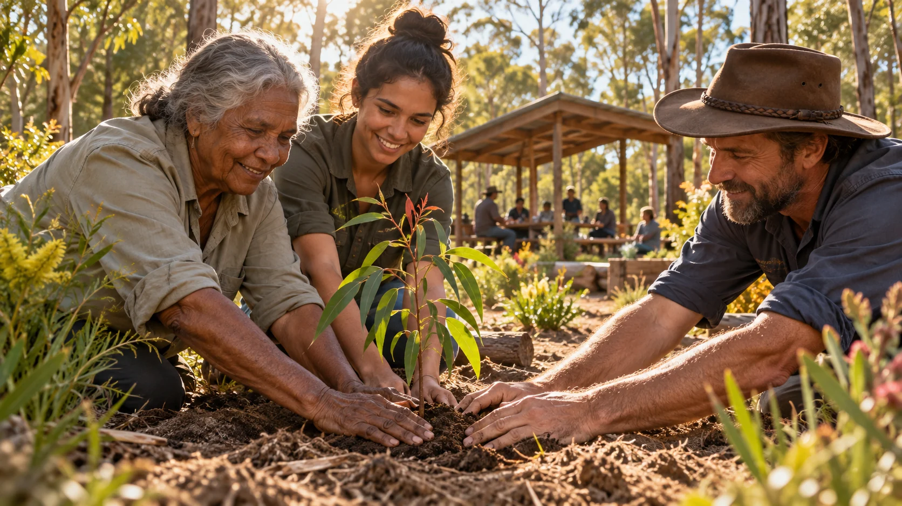
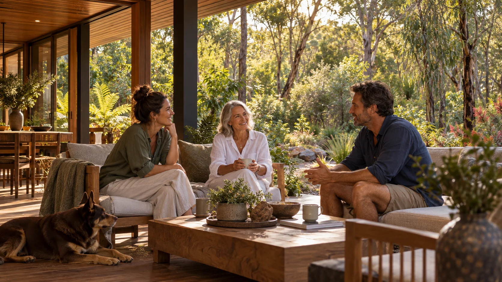
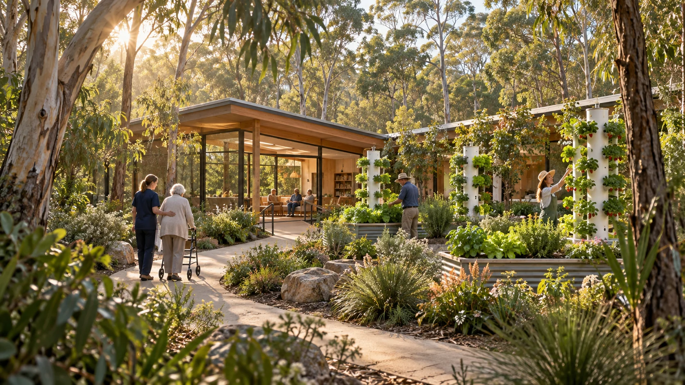
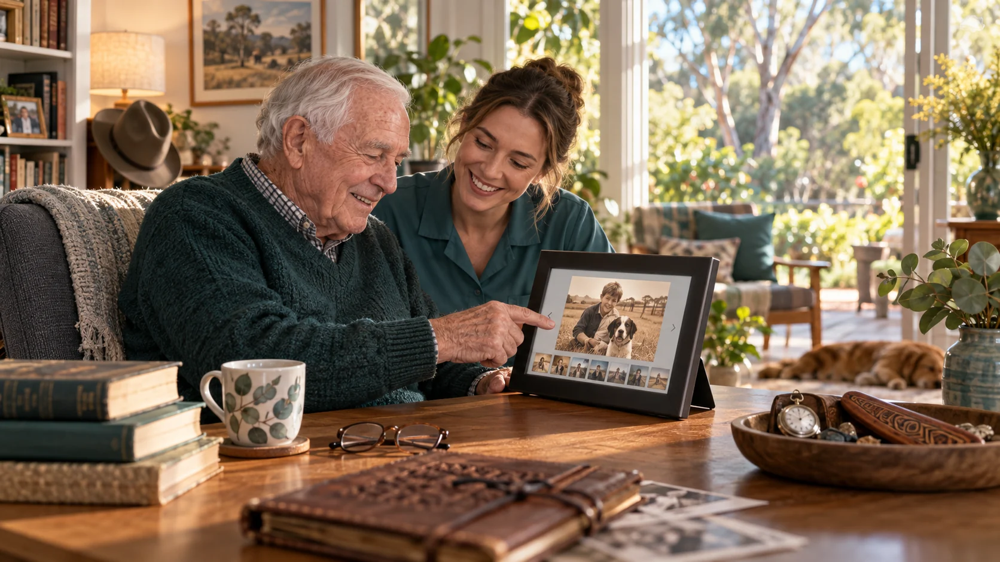

GenAI concept artwork
GenAI concept artworkOther proposals for the Indigenous community
The wider Minjerribah network brings together proposals for living, culture, recovery, safety, housing, care, learning and useful work. Each opens a conversation about what could serve local people and how they would like to shape it.
Visit the Minjerribah site and service ideas ↗7 Mile living and residency proposal
Living, residencies, visitors, ceremony, gardens, making and retained scrub.
Explore this proposal ↗
9 Ballow Road public hub
A proposed Dunwich base for technology help, training, media, meetings and coordination.
Explore this proposal ↗
Men’s alcohol and drug free camp
Culture, mentoring, daily rhythm, food, gardens, useful work and support beyond each stay.
Explore this proposal ↗
A safe place for women and children
A proposal to explore with relevant women around location, leadership and everyday support.
Explore this proposal ↗
Housing for different stages of life
Connections between immediate shelter, supported transition, stable homes and ageing in place.
Explore this proposal ↗
Aged care and longevity research
Everyday quality of life, ageing in place, Aura digital twins and future research.
Explore this proposal ↗
Sand and Screen for all ages
Sand sport, outdoor cinema, local screen work, gathering and practical roles.
Explore this proposal ↗Explore how the ideas connect
The network also brings together organisation setup, funding and operating approaches and the source trail.